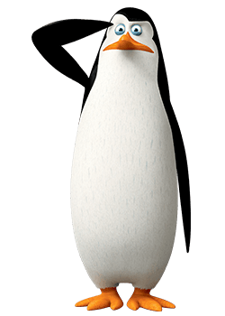

<
KowalskiThePenguin
kowalski The Penguin!

Kowalski is ranked as Second-In-Command as Skipper's Lieutenant, Shock Unit (Mr.) Kowalski is the smartest, tallest (if unusually small for his species), and thinnest penguin. He makes his debut in Madagascar, a supporting character in Madagascar: Escape 2 Africa and Madagascar 3: Europe's Most Wanted and one of the main characters of Penguins of Madagascar: The Movie. Kowalski forms plans for the group and usually takes notes for Skipper. His knowledge has allowed him to take up positions where his intelligence is needed, such as being the team's medic as well as chief scientist and inventor. He tends to unnecessarily over-analyze simple situations.